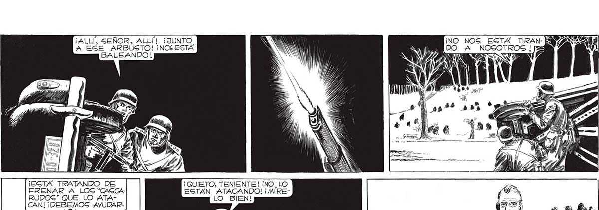
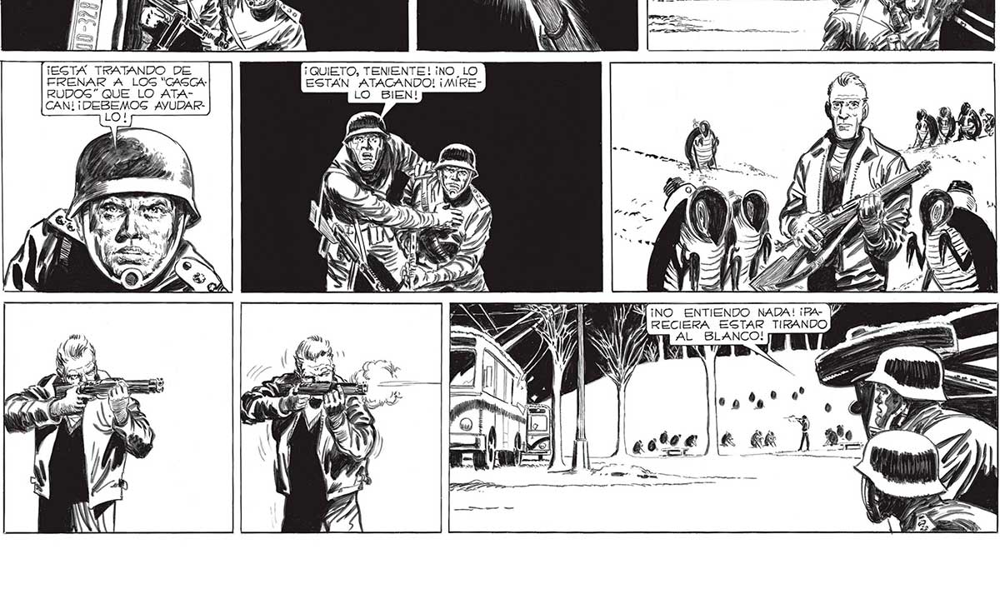

141 ¡NO NOS ESTA TIRAN- E DO A NOGOTROS ! pa ALLÍ, GEÑOR, ALLÍI ¡JUNTO NW A EGE ARBUSTO! ¡NOS ESTA NIN nde BALEANDO ! NOA SUENAN y NN 1 AN ¡EGTA TRATANDO DE ¡QUIETO, TENIENTE! ¡NO_ LO FRENAR A LOS "CAGCA- ESTAN ATACANDO! ¡MIRERUDOG” QUE LO ATA- LO BIEN! CAN! y jp AYUDARLO! ¡NO ENTIENDO NADA! ¡PA- V4 ÍÁRECIERA ESTAR TIRANDO AL BLANCO! muy 7 b eg”? pe, A actvej ¡e EK_) A

